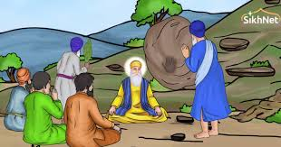

1. The Ego of Vali Kandhari
Vali Kandhari was a religious man who lived on a hill in the town of Hasan Abdal (now in Pakistan). He was known for his spiritual powers, but he was also very proud and egoistic.
2. Guru Nanak’s Visit
Guru Nanak Dev Ji and Bhai Mardana arrived in the town. When Bhai Mardana became thirsty, Guru Ji asked him to request water from Vali Kandhari, who had a spring of fresh water on the hill.
3. The Refusal
Bhai Mardana humbly asked for water, but Vali Kandhari refused. He didn’t like that Guru Nanak Ji was gaining respect among the people. Bhai Mardana returned, and Guru Nanak Ji told him to ask again, but Vali denied once more, mocking them.
4. The Miracle
Guru Nanak Dev Ji then moved a stone nearby. A stream of fresh water began flowing from beneath it. The people were amazed. When Vali Kandhari saw this, he became furious. In his anger, he rolled a massive boulder down the hill toward Guru Ji.
5. The Handprint
As the huge rock came crashing down, Guru Nanak Ji calmly raised his hand. The rock stopped instantly. His palm left an impression on the stone, which can still be seen at Panja Sahib.
6. Vali Kandhari Realizes the Truth
Witnessing this divine act, Vali Kandhari’s ego shattered. He came down and bowed before Guru Nanak Dev Ji, realizing the power of humility, truth, and divine love.
💡 The Message
- 🔶 Ego blinds us to the truth.
- 🟠 True power lies in humility, not pride.
- 🟡 Guru Nanak's teachings overcome even the hardest of hearts.
📚 Moral of the Story
“Ego falls before truth. The hand of the divine always protects the humble.”